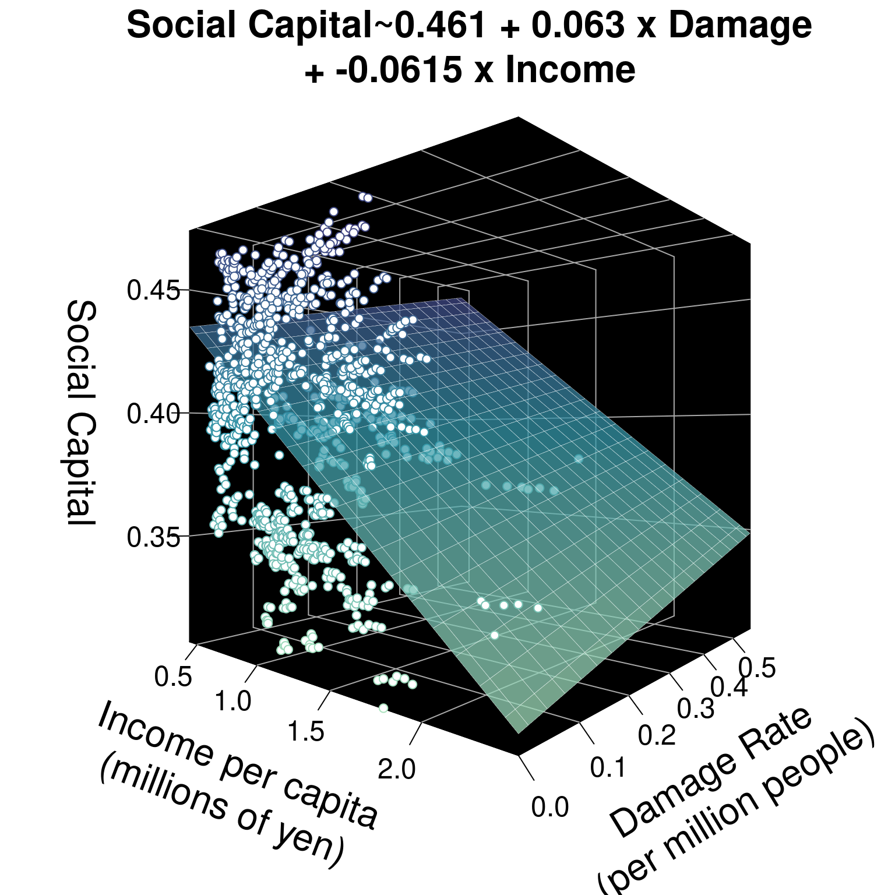
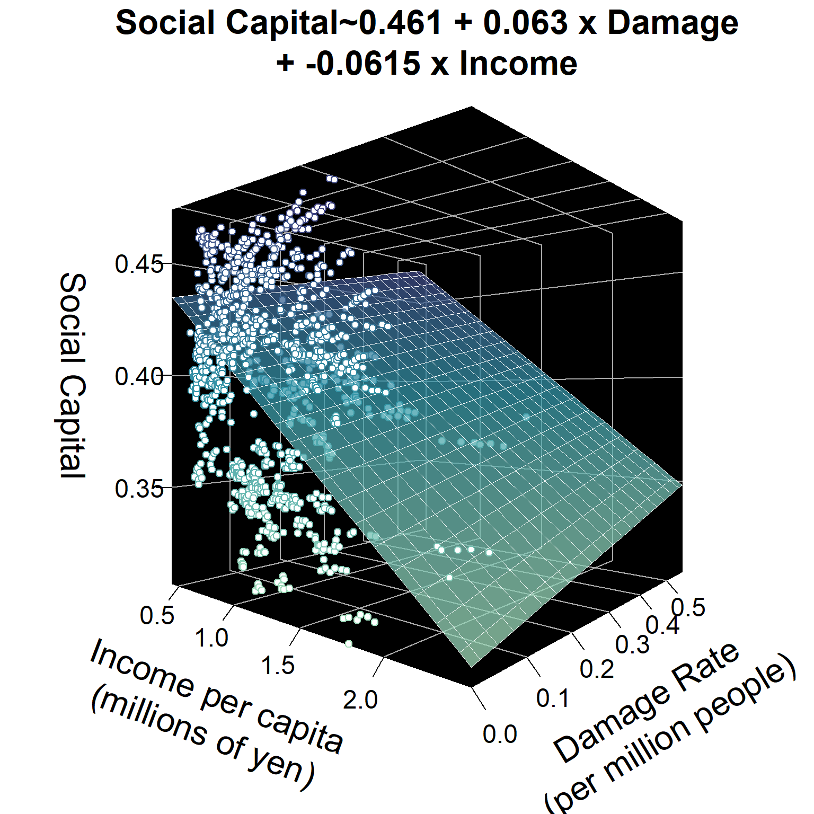

12 Workshop: Multivariate Regression: Modeling Effects of Disaster on Social Capital

Why do some communities see stronger social capital than others? Social capital refers to the social ties that bind results, enabling trust and collective action among residents to tackle public issues. Recent studies suggest that after disasters, residents’ social capital actually increases, because people recognize the value of friends and family as they work to recover and rebuild. We can use regression analysis to test this hypothesis on new data!
This workshop examines 151 Japanese municipalities over 7 years, from 2011 to 2017 (jp_matching_experiment.csv), totaling 1057 city-year observations. This includes 85 coastal municipalities hit by the 2011 tsunami and 66 municipalities as similar as possible, just next door, that were not hit. Let’s load in our data and get started.
Getting Started
Load Data & Packages
In this dataset, each row is a city-year!
# Load Packages
library(tidyverse) # for data manipulation
library(broom) # for each model summaries
library(texreg) # for nice model tables
# Load Data
cities <- read_csv("workshops/jp_matching_experiment.csv") %>%
# Tell R to treat year and pref as ordered categories
mutate(year = factor(year),
pref = factor(pref))View Data
| muni_code | muni | pref | year | by_tsunami | social_capital | damage_rate | pop_density | exp_dis_relief_per_capita | income_per_capita | unemployment | pop_women | pop_over_age_65 |
|---|---|---|---|---|---|---|---|---|---|---|---|---|
| 02201 | Aomori | Aomori | 2011 | Hit | 0.393 | 0.000 | 1119.2 | 0.01 | 1.11 | 5.9 | 53.6 | 27.9 |
| 02202 | Hirosaki | Aomori | 2011 | Not Hit | 0.413 | 0.000 | 602.1 | 0.06 | 0.99 | 4.5 | 54.1 | 29.2 |
| 02203 | Hachinohe | Aomori | 2011 | Hit | 0.408 | 0.001 | 1137.5 | 2.44 | 1.13 | 5.5 | 52.2 | 27.5 |
Codebook
In this dataset, our variables mean:
muni_codeunique 5 digit idenfier for each municipality.muni: municipality where election took placepref: prefecture that municipality is inyear: year of observation.by_tsunami: was that city struck by the tsunami (“Hit”), not hit but just next door (“Not Hit”), or some other municipality (“Other”)?
Outcome Variable
social_capital: index measuring overall social capital, the social ties between residents that build trust, using several dimensions. Measured on a scale from 0 (low) to 1 (high).
Explanatory Variable
damage_rate: rate of buildings damaged or destroyed by earthquake and tsunami, per million residents.
Control Variables
exp_dis_relief_per_capita: spending on disaster relief in 1000s of yen per capita.income_per_capita: income per capita in millions of yen per capita.unemployment: unemployment rate per 1,000 residents.pop_women: % residents who are womenpop_over_age_65: % residents over age 65pop_density: population in 1000s of residents per square kilometer
12.1 Multiple Regression
12.1.1 Beta coefficients
We can use a regression model to test the association between our outcome variable social_capital and our explanatory variable by_tsunami. Using the lm() function, we can get a beta coefficient estimating how much higher a social capital index score they received for every additional building damaged per million residents.
##
## Call:
## lm(formula = social_capital ~ damage_rate, data = .)
##
## Coefficients:
## (Intercept) damage_rate
## 0.39419 0.07485
12.1.2 Controls
But… many other things might affect social capital in a community, not just getting hit by the tsunami: For example, (1) population density, (2) wealth, (3) unemployment, (4) age, (5) government capacity, (6) disaster relief, (7) time, and even (8) regional differences. We need to add control variables to our model to control for these alternative explanations for variation in social capital. This will refine our beta coefficient for the effect of the tsunami, getting us closer to the truth.
We can add extra control variables using + in the lm() function. For example, we test the effect of damage_rate below, controlling for income_per_capita.
##
## Call:
## lm(formula = social_capital ~ damage_rate + income_per_capita,
## data = .)
##
## Coefficients:
## (Intercept) damage_rate income_per_capita
## 0.46141 0.06303 -0.06148Our model tells us that for every building damaged per million residents, the social capital index increased by 0.06. For every additional million yen per capita in income, the average city’s social capital index increased by -0.06.
12.1.3 Planes
Instead of a line of best fit, for 2 variables, this regression model now essentially predicts a plane of best fit for 3 variables. See below. And, given 4 or more variables, a regression model will predict a hyperplane of best fit. Not easy to visualize, but just think: 4 variables means 4 dimensions. 5 variables means 5 dimensions.

Learning Check 1
Question
damage_rate on social_capital, controlling for pop_density. What’s the effect of damage_rate on social_capital?
[View Answer!]
##
## Call:
## lm(formula = social_capital ~ damage_rate + pop_density, data = .)
##
## Coefficients:
## (Intercept) damage_rate pop_density
## 4.029e-01 6.812e-02 -9.173e-06Controlling for population density, as damage rates increase by 1 building per million residents, the social capital index increases by 0.068 points.
12.2 Effect Sizes
One big challenge with multiple regression is that it’s not really clear how to compare the size of our beta coefficients. Is 1 damaged building per million residents greater than or less than 1 square kilometer per 1000 residents, or 1 million yen per capita? To compare the size of our beta coefficients, our variables must have the same units. We can do this by turning our numeric variables into Z-scores.
Remember that a Z-score is a measure of how many standard deviations from the mean a specific value is for a given variable. We can mutate() variables into Z-scores using the scale() function.
rescaled <- cities %>%
# For each numeric variable, rescale its values
mutate(social_capital = scale(social_capital),
damage_rate = scale(damage_rate),
pop_density = scale(pop_density),
exp_dis_relief_per_capita = scale(exp_dis_relief_per_capita),
income_per_capita = scale(income_per_capita),
unemployment = scale(unemployment),
pop_women = scale(pop_women),
pop_over_age_65 = scale(pop_over_age_65))Check out our new rescaled variables.
| muni_code | muni | pref | year | by_tsunami | social_capital | damage_rate | pop_density | exp_dis_relief_per_capita | income_per_capita | unemployment | pop_women | pop_over_age_65 |
|---|---|---|---|---|---|---|---|---|---|---|---|---|
| 02201 | Aomori | Aomori | 2011 | Hit | -0.1296000 | -0.6351305 | 0.1290887 | -0.3617464 | 0.09763001 | 1.0562282 | 1.2937535 | -0.6429615 |
| 02202 | Hirosaki | Aomori | 2011 | Not Hit | 0.3907693 | -0.6351305 | -0.1932630 | -0.3611821 | -0.34526666 | -0.1842532 | 1.5495231 | -0.4271015 |
| 02203 | Hachinohe | Aomori | 2011 | Hit | 0.2606770 | -0.6225776 | 0.1404966 | -0.3343254 | 0.17144612 | 0.7018050 | 0.5775988 | -0.7093800 |
Okay, let’s repeat our model, this time using our new data.frame rescaled, and save the model as m0.
##
## Call:
## lm(formula = social_capital ~ damage_rate + pop_density, data = .)
##
## Coefficients:
## (Intercept) damage_rate pop_density
## -3.667e-16 1.412e-01 -3.829e-01We can now interpret our results as: As the damage rate increases by 1 standard deviation (new unit of predictor), the social capital index increases by 0.14 standard deviations (new unit of outcome), controlling for population density.
Learning Check 2
Question
m1, that also controls for the effect of year. Because we made it a factor(), we control for each year. The beta coefficient tells us now how many more standard deviations of social capital we got in year X compared to the first year (2011), our baseline for comparison. The alpha coefficient tells us how many standard deviations we got during the our baseline year. Which year had the largest effect on social capital, and how much was that effect?
[View Answer!]
##
## Call:
## lm(formula = social_capital ~ damage_rate + pop_density + year,
## data = .)
##
## Coefficients:
## (Intercept) damage_rate pop_density year2012 year2013 year2014
## 3.989e-01 6.812e-02 -9.173e-06 4.987e-03 2.238e-03 3.172e-03
## year2015 year2016 year2017
## 5.391e-03 5.868e-03 6.351e-032017 had the largest effect on social capital, compared to 2011. In 2011, the average city saw 0.3989 standard deviations above the mean of social capital. In 2017, the average city saw 0.0064 standard deviation more social capital than in 2011 (totaling 0.4053 standard deviation above the mean).
Notice that we didn’t rescale categorical variables. In regression, categorical variables can’t be rescaled or compared to numeric variables.
12.3 Multiple Models
To find the best model, it helps to make several, in a logical, systematic way.
- Choose your explanatory variable whose effect you really want to test. For us, that’s disaster damage (
damage_rate). Add choose your absolutely most essential control variables, without which the model isn’t very valid. For us, that’spop_densityandyear. (Already done and saved asm1!)
# For your reference
m1 <- rescaled %>%
lm(formula = social_capital ~ damage_rate + pop_density + year)- Add more controls, to wean out effects of other phenomena and get a more accurate beta coefficient for
damage_rate. Let’s addexp_dis_relief_per_capita, to control for city government spending on disaster relief. Save that asm2.
m2 <- rescaled %>%
lm(formula = social_capital ~ damage_rate + pop_density + year +
exp_dis_relief_per_capita)- Examine our two tables, using the
texregpackage’shtmlreg()function. We’re going tolist()our modelsm1andm2, and ask R to save a nice table in our files as"table_1.html". Try it out, then go to your files in the right-hand corner and click'View in Web Browser'!
htmlreg(list(m1,m2),
bold = 0.05, include.fstat = TRUE,
file = "workshops/workshop_11_table_1.html")[Click to view table!]
| Model 1 | Model 2 | |
|---|---|---|
| (Intercept) | -0.10 | -0.09 |
| (0.07) | (0.07) | |
| damage_rate | 0.14*** | 0.02 |
| (0.03) | (0.03) | |
| pop_density | -0.38*** | -0.37*** |
| (0.03) | (0.03) | |
| year2012 | 0.13 | 0.08 |
| (0.11) | (0.10) | |
| year2013 | 0.06 | 0.02 |
| (0.11) | (0.10) | |
| year2014 | 0.08 | 0.09 |
| (0.11) | (0.10) | |
| year2015 | 0.14 | 0.15 |
| (0.11) | (0.10) | |
| year2016 | 0.15 | 0.15 |
| (0.11) | (0.10) | |
| year2017 | 0.17 | 0.16 |
| (0.11) | (0.10) | |
| exp_dis_relief_per_capita | 0.22*** | |
| (0.03) | ||
| R2 | 0.17 | 0.21 |
| Adj. R2 | 0.17 | 0.20 |
| Num. obs. | 1057 | 1057 |
| F statistic | 27.50 | 30.63 |
| ***p < 0.001; **p < 0.01; *p < 0.05 | ||
Pretty nice, right? The bold = 0.05 says, if your p-value is below p < 0.05, make the estimate bold in the chart, so it’s easy to see. include.fstat = TRUE means, please include the F-statistic at the bottom of the chart.
Learning Check 3
Question
m3, adding as controls income_per_capita, unemployment, pop_women, and pop_over_age_65. Then make a model called m4, which adds pref, the prefecture each city is in (like their state). Finally, put them together in a htmlreg() table that visualizes m1, m2, m3, and m4 side by side, called "table_2.html". Look at the R-squared statistic at the bottom. Which model fits best?
[View Answer!]
Adding controls income_per_capita, unemployment, pop_women, and pop_over_age_65…
m3 <- rescaled %>%
lm(formula = social_capital ~ damage_rate + pop_density + year +
exp_dis_relief_per_capita +
income_per_capita + unemployment + pop_women + pop_over_age_65)Adding prefectural controls…
m4 <- rescaled %>%
lm(formula = social_capital ~ damage_rate + year + pop_density +
exp_dis_relief_per_capita +
income_per_capita + unemployment + pop_women + pop_over_age_65 +
pref)Making a nice table!
htmlreg(list(m1,m2,m3,m4),
bold = 0.05, include.fstat = TRUE,
file = "workshops/workshop_11_table_2.html")Model 4 fits best, with an R2 of 0.89. It explains 89% of the variation in social capital! That’s wild!
[Click to view Table from Answer!]
| Model 1 | Model 2 | Model 3 | Model 4 | |
|---|---|---|---|---|
| (Intercept) | -0.10 | -0.09 | -0.18** | 1.41*** |
| (0.07) | (0.07) | (0.06) | (0.10) | |
| damage_rate | 0.14*** | 0.02 | -0.03 | -0.10*** |
| (0.03) | (0.03) | (0.03) | (0.02) | |
| pop_density | -0.38*** | -0.37*** | -0.12*** | -0.20*** |
| (0.03) | (0.03) | (0.03) | (0.02) | |
| year2012 | 0.13 | 0.08 | 0.01 | 0.13*** |
| (0.11) | (0.10) | (0.09) | (0.04) | |
| year2013 | 0.06 | 0.02 | 0.04 | 0.05 |
| (0.11) | (0.10) | (0.09) | (0.04) | |
| year2014 | 0.08 | 0.09 | 0.14 | 0.08* |
| (0.11) | (0.10) | (0.09) | (0.04) | |
| year2015 | 0.14 | 0.15 | 0.24** | 0.13*** |
| (0.11) | (0.10) | (0.09) | (0.04) | |
| year2016 | 0.15 | 0.15 | 0.35*** | 0.13** |
| (0.11) | (0.10) | (0.09) | (0.04) | |
| year2017 | 0.17 | 0.16 | 0.46*** | 0.13** |
| (0.11) | (0.10) | (0.09) | (0.04) | |
| exp_dis_relief_per_capita | 0.22*** | 0.11*** | 0.04* | |
| (0.03) | (0.03) | (0.02) | ||
| income_per_capita | -0.77*** | 0.10*** | ||
| (0.05) | (0.03) | |||
| unemployment | -0.29*** | -0.13*** | ||
| (0.03) | (0.01) | |||
| pop_women | -0.02 | 0.03* | ||
| (0.03) | (0.01) | |||
| pop_over_age_65 | -0.49*** | -0.14*** | ||
| (0.03) | (0.02) | |||
| prefAomori | -1.24*** | |||
| (0.10) | ||||
| prefChiba | -2.82*** | |||
| (0.10) | ||||
| prefFukushima | -0.24* | |||
| (0.10) | ||||
| prefIbaraki | -1.52*** | |||
| (0.11) | ||||
| prefIwate | -0.25** | |||
| (0.10) | ||||
| prefMiyagi | -1.30*** | |||
| (0.10) | ||||
| R2 | 0.17 | 0.21 | 0.43 | 0.89 |
| Adj. R2 | 0.17 | 0.20 | 0.43 | 0.89 |
| Num. obs. | 1057 | 1057 | 1057 | 1057 |
| F statistic | 27.50 | 30.63 | 61.45 | 446.20 |
| ***p < 0.001; **p < 0.01; *p < 0.05 | ||||
12.4 Great Tables
Finally, let’s add a few bells and whistles to our model table, to make it look really nice.
[Click here to learn about texreg() arguments!]
custom.model.nameslets you add names for each column.custom.coef.maplets you rename variables. It also lets you rearrange them in whatever order makes sense to you. Only variables you rename will stay in the table, so it also will let us exclude theyeareffects, which are a few too numerous to report.captionadds a nice title.caption.above = TRUEputs it on top of the table.custom.noteadds a footnote. Always indicate levels of statistical significance.single.row = TRUEputs everything on one row, which is helpful.
htmlreg(
list(m1,m2,m3,m4),
bold = 0.05,
include.fstat = TRUE,
file = "workshops/workshop_11_table_3.html",
# Add column labels
custom.model.names = c(
"Basic Model", "with Controls",
# You can split lines in two with <br>
"With Extended<br>Controls",
"With Geographic<br>Controls"),
# Add labels
custom.coef.map = list(
"damage_rate" = "Damage Rate",
"exp_dis_relief_per_capita" = "Disaster Spending Rate",
"income_per_capita" = "Income per capita",
"unemployment" = "Unemployment Rate",
"pop_women" = "% Women",
"pop_over_age_65" = "% Over Age 65",
"prefAomori" = "Aomori",
"prefChiba" = "Chiba",
"prefFukushima" = "Fukushima",
"prefIbaraki" = "Ibaraki",
"prefIwate" = "Iwate",
"prefMiyagi" = "Miyagi",
"(Intercept)" = "Intercept"),
# Add a table caption
caption = "OLS Model of Social Capital in Japanese Cities over 7 years",
# You can still add a custom note too!
custom.note = "Statistical Significance: *** p < 0.001; ** p < 0.01; * p < 0.05. Akita is the baseline prefecture. All models also control for each year (2011-2017) as a categorical variable.")[Click to view table!]
| Basic Model | with Controls | With Extended Controls |
With Geographic Controls |
|
|---|---|---|---|---|
| Damage Rate | 0.14*** | 0.02 | -0.03 | -0.10*** |
| (0.03) | (0.03) | (0.03) | (0.02) | |
| Disaster Spending Rate | 0.22*** | 0.11*** | 0.04* | |
| (0.03) | (0.03) | (0.02) | ||
| Income per capita | -0.77*** | 0.10*** | ||
| (0.05) | (0.03) | |||
| Unemployment Rate | -0.29*** | -0.13*** | ||
| (0.03) | (0.01) | |||
| % Women | -0.02 | 0.03* | ||
| (0.03) | (0.01) | |||
| % Over Age 65 | -0.49*** | -0.14*** | ||
| (0.03) | (0.02) | |||
| Aomori | -1.24*** | |||
| (0.10) | ||||
| Chiba | -2.82*** | |||
| (0.10) | ||||
| Fukushima | -0.24* | |||
| (0.10) | ||||
| Ibaraki | -1.52*** | |||
| (0.11) | ||||
| Iwate | -0.25** | |||
| (0.10) | ||||
| Miyagi | -1.30*** | |||
| (0.10) | ||||
| Intercept | -0.10 | -0.09 | -0.18** | 1.41*** |
| (0.07) | (0.07) | (0.06) | (0.10) | |
| R2 | 0.17 | 0.21 | 0.43 | 0.89 |
| Adj. R2 | 0.17 | 0.20 | 0.43 | 0.89 |
| Num. obs. | 1057 | 1057 | 1057 | 1057 |
| F statistic | 27.50 | 30.63 | 61.45 | 446.20 |
| Statistical Significance: *** p < 0.001; ** p < 0.01; * p < 0.05. Akita is the baseline prefecture. All models also control for each year (2011-2017) as a categorical variable. | ||||
Learning Check 4
Question
texreg table called "table_4.html", but this time, remove the pref categorical effects from the table, and make a note in the custom note of in which model we controlled for prefecture. Finally, what’s the effect of disaster damage in our final model? How significant is that effect?
[View Answer!]
htmlreg(
list(m1,m2,m3,m4),
bold = 0.05,
include.fstat = TRUE,
file = "workshops/workshop_11_table_4.html",
custom.model.names = c(
"Basic Model", "with Controls",
"With Extended<br>Controls",
"With Geographic<br>Controls"),
custom.coef.map = list(
"damage_rate" = "Damage Rate",
"exp_dis_relief_per_capita" = "Disaster Spending Rate",
"income_per_capita" = "Income per capita",
"unemployment" = "Unemployment Rate",
"pop_women" = "% Women",
"pop_over_age_65" = "% Over Age 65",
# Notice I removed the prefectures here
"(Intercept)" = "Intercept"),
caption = "OLS Model of Social Capital in Japanese Cities over 7 years",
# Notice I added more to the note.
custom.note = "Statistical Significance: *** p < 0.001; ** p < 0.01; * p < 0.05.
All models also control for each year (2011-2017) as a categorical variable. Final model also controls for prefectures. Akita is the baseline prefecture.")
[Click to view table from Answer!]
| Basic Model | with Controls | With Extended Controls |
With Geographic Controls |
|
|---|---|---|---|---|
| Damage Rate | 0.14*** | 0.02 | -0.03 | -0.10*** |
| (0.03) | (0.03) | (0.03) | (0.02) | |
| Disaster Spending Rate | 0.22*** | 0.11*** | 0.04* | |
| (0.03) | (0.03) | (0.02) | ||
| Income per capita | -0.77*** | 0.10*** | ||
| (0.05) | (0.03) | |||
| Unemployment Rate | -0.29*** | -0.13*** | ||
| (0.03) | (0.01) | |||
| % Women | -0.02 | 0.03* | ||
| (0.03) | (0.01) | |||
| % Over Age 65 | -0.49*** | -0.14*** | ||
| (0.03) | (0.02) | |||
| Intercept | -0.10 | -0.09 | -0.18** | 1.41*** |
| (0.07) | (0.07) | (0.06) | (0.10) | |
| R2 | 0.17 | 0.21 | 0.43 | 0.89 |
| Adj. R2 | 0.17 | 0.20 | 0.43 | 0.89 |
| Num. obs. | 1057 | 1057 | 1057 | 1057 |
| F statistic | 27.50 | 30.63 | 61.45 | 446.20 |
| Statistical Significance: *** p < 0.001; ** p < 0.01; * p < 0.05. All models also control for each year (2011-2017) as a categorical variable. Final model also controls for prefectures. Akita is the baseline prefecture. | ||||